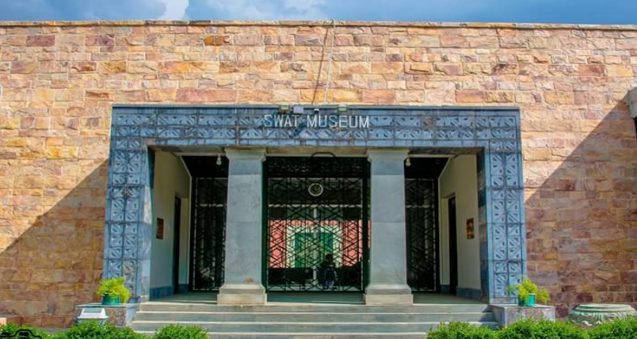

Swat-Museum
The Matiltan Valley runs northeast from Kalam and offers magnificent view of Mount Falaksair(5918 M). It is the most famous peak in the area. The valley offers numerous picnic spots and first-class fishing and hiking opportunities.
